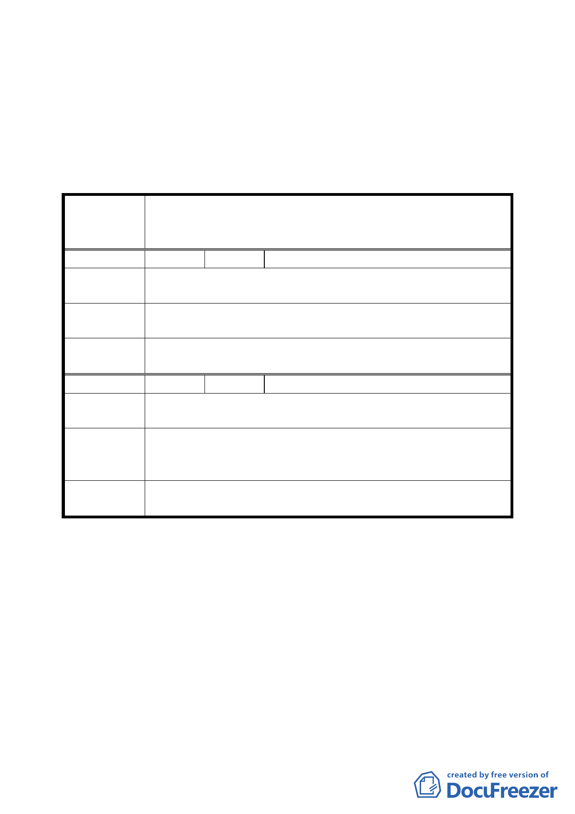

一、本案除案名修正為「修訂臺北市南港區玉成段一小段 536、
536-3、536-4 等地號機關用地為機關用地（供本府原住民
事務委員會等使用）細部計畫案」外，其餘照案通過。
二、公民或團體陳情意見決議如後附綜理表。
臺北市都市計畫委員會公民或團體陳所提意見綜理表
修訂臺北市南港區玉成段一小段 536、536-3、536-4 等地號
案 名 機關用地為機關用地（供本府原住民事務委員會及其他公務
使用）細部計畫案
編 號 １ 陳情人 劉芳子
陳情理由
西新里里民活動中心嚴重漏水，不堪使用，建議遷到本案案
址。
建議辦法
本活動中心使用場次每週 10 次以上，請重視里民學習娛樂休
閒的空間。
委 員 會 議 有關建物樓層之分配與使用，非屬本會權責，請另洽主管機
決 議 關辦理。
編 號 ２ 陳情人 西新里 簡振生里長
陳
情
理
由
原民會預計使用範圍請撥出一個樓層供在地里（西新里）為里
民活動中心。
原西新里居民活動中心因使用年代已久，且於成功橋下，年
建 議 辦 法 久失修，逢雨漏水，重車經過整個場地震動，實有另尋場地
的必要。
委員會議
決議
同編號 1。
附帶決議：有關機關用地之註記方式，請都市發展局洽詢內政部
如何簡化以增使用之彈性，俾供做未來類似案例之處
理依據。
討論事項 二
案名：變更臺北市北投區行義路一小段四九地號等保護區為溫泉
產業特定專用區都市計畫案
案情概要說明：
一、計畫範圍及面積：
3